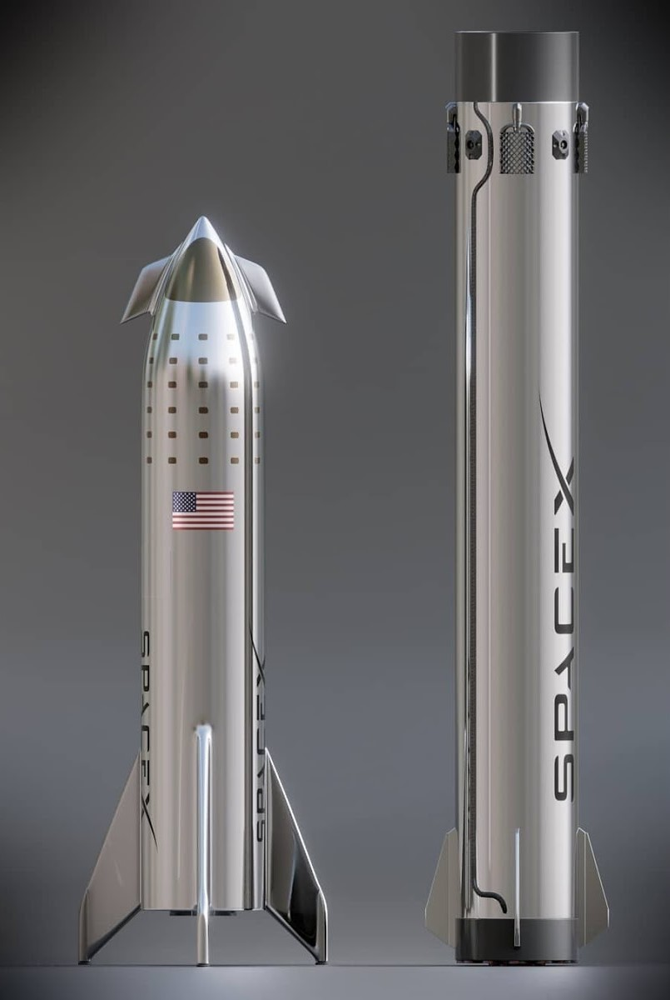

| Mars |
|
Przy zakładaniu SpaceX Elon Musk myślał tylko o jednym: kolonizacji Marsa. Jest to jego życiowy cel i dąży do niego dzień po dniu. Tak ogromnie przedsięwzięcie wymaga ogromnych nakładów pieniężnych jak i dużej ilości inżynierów oraz naukowców gotowych pracować bez przerwy w celu osiągnięcia niemożliwego. Do podróży na Marsa SpaceX użyje najmocniejszej rakiety nośnej w historii ludzkości: Super Heavy. Rakieta jest już zaprojektowana i jej pierwszy start datuje się na 2020 rok. Era podróży kosmicznych jest już coraz bliżej! |
|  |
Mars nie jest przystosowany dla ludzi, więc na początku ludzie będą żyli głównie pod szklanymi kopułami zapewniającymi odpowiednie warunki do życia. Pierwsze realne koncepcje baz marsjańskich są już zaprojektowane, lecz w dalszym ciągu są one ulepszane. Do ostatecznej wersji bazy, jaką wykorzysta SpaceX, jeszcze długa droga, ale Elon Musk mówi, że już w 2050 roku na Marsie będzie stała baza, w której znajdą się tysiące ludzi.
Największym kłopotem w kolonizacji Marsa jest jego odległość od Ziemi. Przy największym jego zbliżeniu znajduje się on ok. 70 milionów kilometrów od Ziemi. Podróż na taką odległość zajmie około 6 miesięcy. W tym czasie należy zapewnić astronautom ochronę przed promieniowaniem kosmicznym oraz dbać o ich kondycję fizyczną, ponieważ w stanie mikrograwitacji u ludzi występuje zanik mięśni oraz problemy z odwapnieniem kości.
Mars jest nieprzyjazną planetą, lecz w przyszłych stuleciach planuje się jego terraformowanie – zmianę jego klimatu na przyjazny ludziom.
Na samym początku na Marsie będzie niewielu ludzi. Lecz Elon Musk zapowiada, że do końca 2100 roku populacja na tej planecie będzie wynosiła ponad milion!
Gdy SpaceX wyląduje z załogą po raz pierwszy na Marsie będzie to zdecydowanie największym osiągnięciem w historii ludzkości – staniemy się gatunkiem międzyplanetarnym!